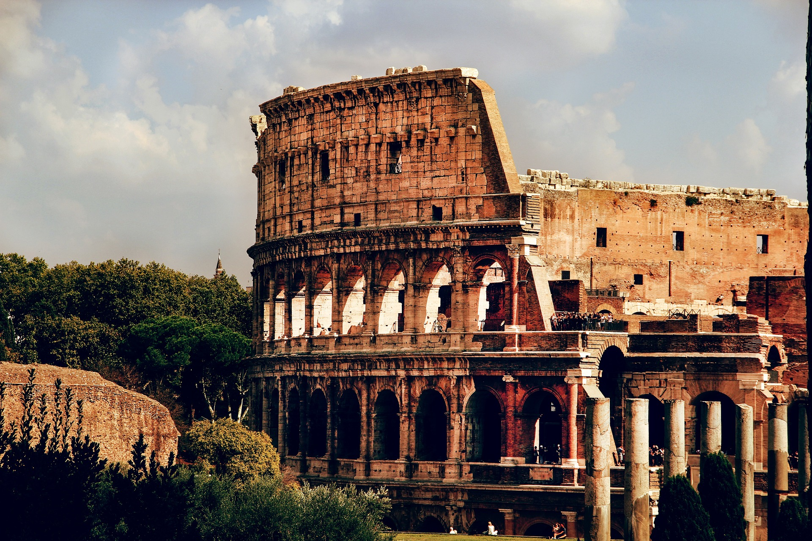

Le Colisée est le nom d'un amphithéâtre romain datant de l'antiquité, construit sous les règnes des empereurs Vespasien et Titus, puis modifié par Domitien. On l'appelle parfois l'amphithéâtre Flavien. Son nom actuel est un dérivé de l'adjectif 'colossal', qui est l'une de ces caractéristiques. Le Colisée est la plus grande construction de l'antiquité romaine, il se trouve actuellement au centre-ville de Rome, ce qui en fait le monument le plus visité de Rome. Le Colisée Romain est aujourd'hui le symbole de Rome dans le monde et est considéré comme l'une des Sept Merveilles du Monde devenant un trésor historique et archéologique qui nous rappelle la grandeur de l'Empire Romain. Selon une estimation du Ministère de la Culture, l'Amphithéâtre Flavien reçoit 6 millions de visiteurs par an et est le premier parmi les monuments les plus visités d'Italie.
Le Colisée est vraiment impressionnant si l'on s'en approche, mais il faut reconnaitre qu'il est en triste état. Il faut relativiser car beaucoup d'autres bâtiments antiques sont en ruine, eux, et lui est toujours debout, mais il est loin d'être complet. Parmi les principales destructions, il faut noter le fait qu'une grande partie de la façade extérieure est tombée, ainsi que l'arène elle-même. Les sous-sols de l'arène existent toujours mais sont à l'air libre, fortement dégradés. Enfin une partie des gradins ont disparu, de même que les mats qui soutenaient la toile de protection solaire. Mais malgré ces destructions, le Colisée reste un bâtiment imposant que l'on imagine sans peine dans son intégralité puisqu'il est de forme approximativement circulaire, et que ce n'est qu'une partie de la façade qui n'existe plus. Il suffit donc de se l'imaginer avec la totalité de la façade en place, ainsi qu'avec l'arène pour savoir comment il était à l'origine.
L'amphithéâtre était une salle de spectacles, c'est à dire que la population qui s'y rendait passait sa journée à regarder différents spectacles. Les plus souvent, les romains se divertissaient devant : Des combats de gladiateurs, Des chasses d'animaux sauvages, Des reconstitutions de batailles navales, Des reconstitutions d'espaces champêtres ou forestiers, Des présentations d'oeuvres d'art, Des exécutions de condamnés à mort. Ces types de spectacles étaient présentés dans différents ordres, sans qu'il n'y ai de protocoles. Bien sûr les spectacles de batailles navales, que l'on appelle des naumachies, interdisaient l'utilisation de l'arène pour présenter une forêt, mais cette arène était avant tout vue comme un vaste espace pouvant être utilisé à loisir : Ainsi la plantation d'arbres, temporairement, permettait aux animaux sauvages de se cacher.

Très près du Colisée se trouve le Forum Romain où vous ne pouvez pas manquer de voir: Les deux Arcs du Triomphe, où se distingue principalement celle de Tito en raison de son importance historique et de sa dimension. Cet arc rappelle le triomphe de Tito sur les Juifs dans l’année 70, Le Temple des Dioscures qui avec ses trois colonnes corinthiennes est devenu une icône de la Rome Antique, La Basilique de Massenzio avec sa structure imposante, La Maison des Vestales avec sa charmante cour intérieure où l'on peut revivre la vie des uniques prêtresses féminines de Rome dont la mission était liée au destin de la ville.
Très proche du Colisée à Rome se trouve le Château Saint-Ange, une forteresse qui était aussi un palais, où les papes ont passé de longues périodes pendant les temps difficiles. Pour cette raison, il a des salles nobles, enrichies d'élégantes fresques de la Renaissance.